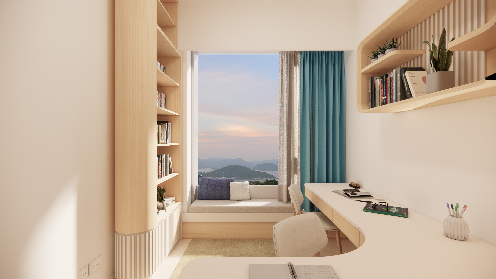
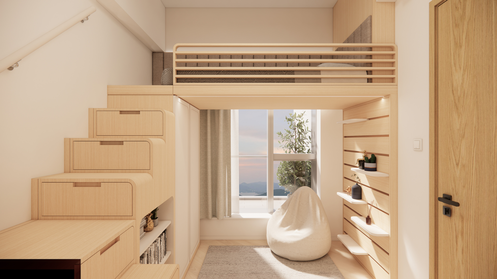
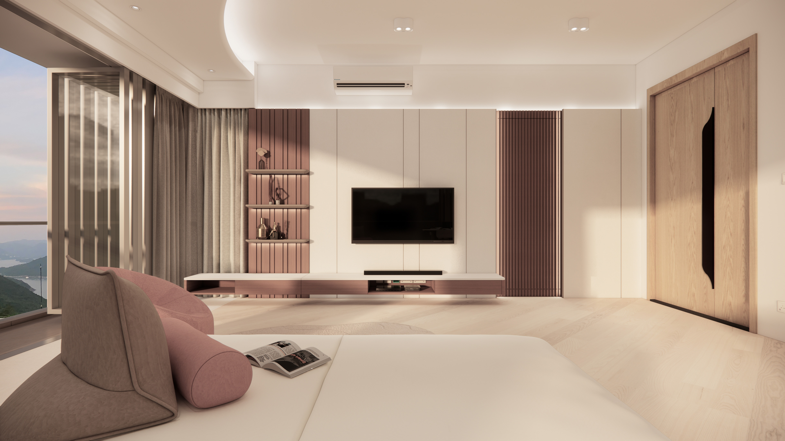
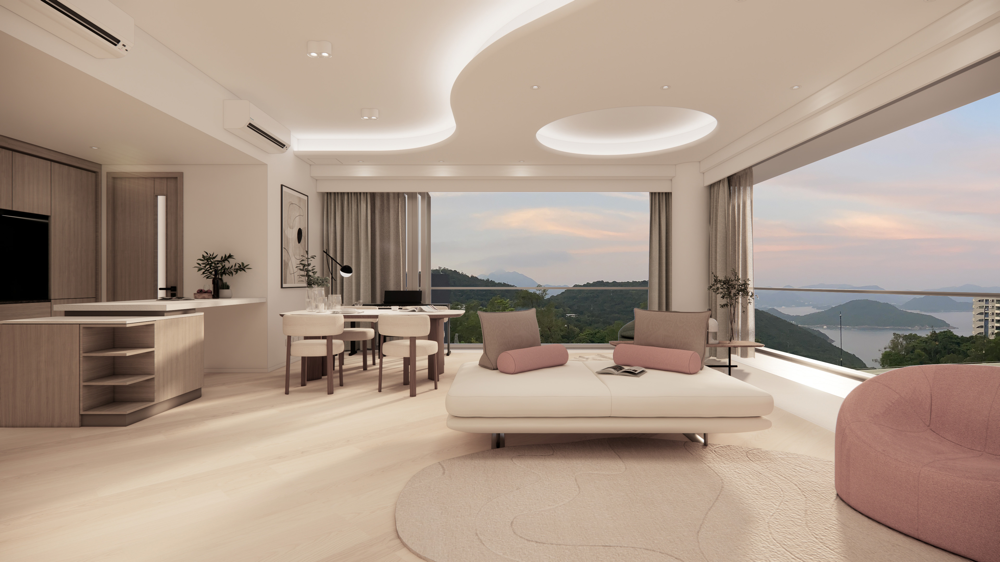
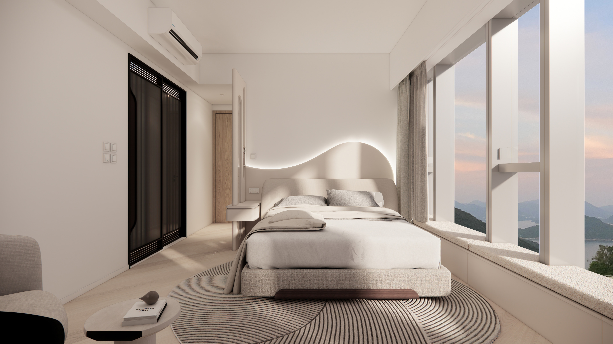

Residential, 1800 square feet
“In a world of increasing noise, the most profound luxury is clarity.”






Situated in the heart of the financial district, the office design for this state-owned investment firm aims to project a professional image for both its employees and client-facing operations.
Ample natural light was the primary prerequisite in creating this bright and airy workspace, in a design that maximizes the city vistas surrounding the Central district.